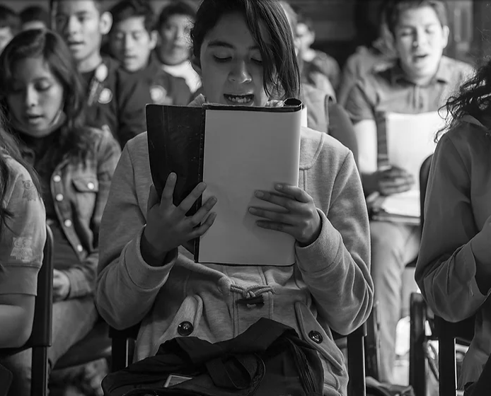
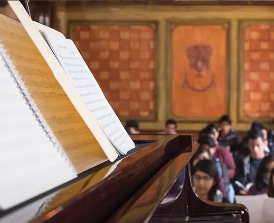
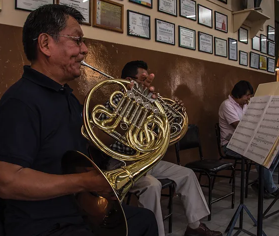

Oferta de estudios en 17 instrumentos
(El alumno elige uno)
Alientos madera
- Flauta
- Oboe
- Clarinete
- Fagot*
- Saxofón
Alientos metal
- Trompeta
- Corno
- Trombón
- Tuba*
Cuerdas
- Violín
- Viola
- Violoncello
- Contrabajo
Otros
- Canto
- Piano
- Guitarra clásica
- Percusiones
*Sólo se ofrecen en el nivel Inicial y Técnico Profesional en Música (TPM)

Nivel inicial
Dirigido a niños y niñas que tengan cursado y aprobado el tercer año de primaria y que no excedan de 17 años de edad.

Nivel Técnico Profesional
Dirigido a estudiantes que concluyeron el Nivel Inicial en Música y la secundaria.

Nivel Licenciatura
Dirigido a estudiantes que concluyeron el nivel Técnico Profesional en Música y el bachillerato o equivalente.